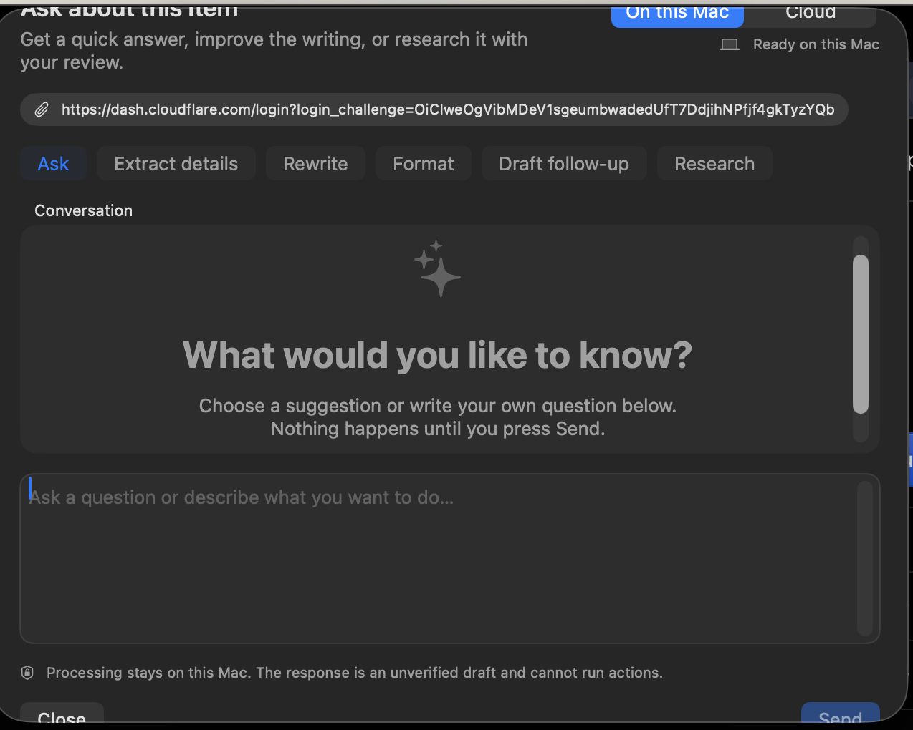

Before
Oversized empty state

1The idle conversation card repeats the prompt’s job and consumes most of the sheet.
2Preset controls compete with the editor instead of accelerating it.
3The primary action sits far from the question field.